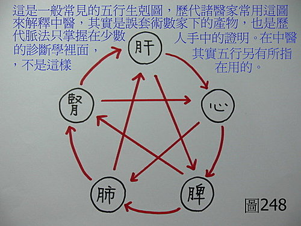
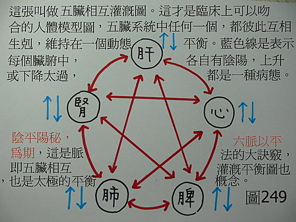
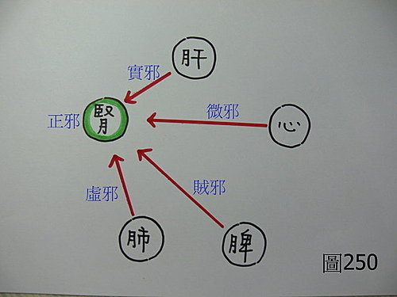
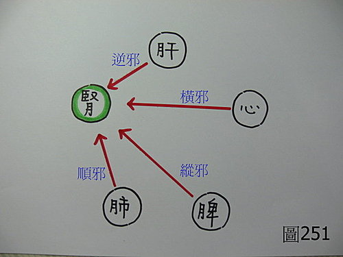
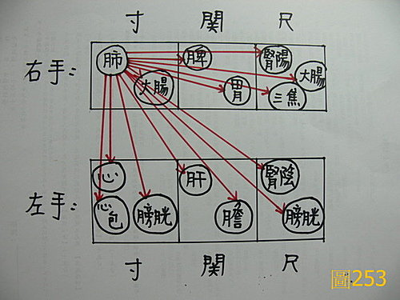
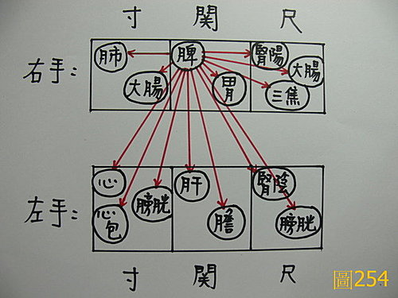

脈理醫理學 31：藥王脈學重要醫理生理病理模型‥‥‥五臟相互灌溉圖（陰平陽秘，六脈以平為期）‥‥修正五行生剋圖的謬誤（一併說明：隔一隔二隔三之治、五行生剋之治（如見肝之病，當先實脾）、臟腑別通、左升右降、水寒土濕、扶陽理論）（上）
作者：陳建元
學中醫一定要先對〝人體模型〞有一個概念，然後搭著這個概念，才能順利的往上爬上去。古代是以〝藏象〞來描述〝人體模型〞的，所謂的〝藏象〞，因為古代解剖學不是像現代這樣發達，所以對於人體的描述和各個器官實質功能的瞭解，是把各種臟腑器官外在表現出來的功能和觀察到的現象，予以歸成幾大類來描述，此即 〝藏象〞。
古代對於臟腑功能的歸類，借用了當時通俗〝五行〞的分類方式，先把它們分成五大類（肝系統、心系統、脾系統、肺系統、腎系統），之後如果這個模型不夠使用，則再加入奇恆之府、經絡、肢節、三焦‥‥‥等工具來補充，以此就可以構成一個整體而不會工具不夠用。這些（肝系統、心系統、脾系統、肺系統、腎系統），是為了要描述人體生理、病理現象所設立的工具，有了工具，然後就可以把觀察到的現象歸類並記錄下來。一些日本學者，礙於文字上的隔閡，對《內經》的內容是誤解的，以為《內經》跟診病用藥沒關係，只是一本說玄的陰陽書籍或只是針灸的書，這些認識是不正確的。
古《內》、《難》、《脈經》、《傷寒論》給你的人體模型是什麼呢？很多人以為是〈圖248〉，其實是錯誤的，這是把術數上的模型拿來誤用了。〈圖249〉這個模型才是正確而吻合臨床的人體模型。


看一下以下《內、難、脈經、傷寒論》的資料：
黃帝問曰：「余聞胃氣、手少陽三焦、四時五行脈法，夫人言脈有三陰三陽，知病存亡，脈外以知內，尺寸大小，願聞之。岐伯曰：寸口之中，外別浮沉，前後左右，虛實死生之要，皆見寸口之中，脈從前來者為實邪，從後來者為虛邪，從所不勝來者為賊邪，從所勝來者為微邪，自病者為正邪，外結者病癰腫，內結者病疝瘕也，間來而急者，病正在心，癥氣也，脈來疾者為風也，脈來滑者為病食也，脈來滑躁者病有熱也，脈來澀者為病寒濕也，脈逆順之道，不與眾謀。」《脈經第1卷‧遲疾短長雜脈法第十三》〈圖250〉。
問曰：「脈有相乘，有縱有橫，有逆有順，何謂也？」師曰：「水行乘火，金行乘木，名曰縱。火行乘水，木行乘金，名曰橫。水行乘金，火行乘木，名曰逆。金行乘水，木行乘火，名曰順也。」《傷寒論‧平脈法》〈圖251〉。
〈圖250〉、〈圖251〉中，我們皆以〝腎〞舉例來說明，可以看到這些書中並不是教你用術數去剋來剋去，而是教你去從脈證中去找出〝病機〞來治病，譬如說病位是〝腎病〞，但病源病機可能是來自於〝肝源〞的，也可能是〝心源〞的，也可能是〝脾源〞的，也可能是〝肺源〞的，所以你要把病源找出來，找出病機之所在，然後就能下藥。這是一種憑實據的方法，是不跟你講玄理的。看一下〈圖249〉這個模型，它告訴你雖然先把人體臟腑分成五大類來描述人體，但並沒有〈圖248〉那種必然的生剋關係，而是誰都可以剋誰、誰都可以生誰，所謂的「生、剋」，只是指兩組系統之間的交互關係，也是用來指出病位和病源，未必都是在同一地點的概念和事實而已，這和術數中的五行照著固定方向來生剋的概念是不相干的。


中醫玄不玄，其實中醫一點都不玄，本身就是對人體的觀察、記錄、和統計而已，並無什麼玄不玄的問題，以現代醫學來比喻，譬如〝血壓太高〞，這是一個問題，問題可以是多源的，可以來自於〝心源的〞，來自於〝腎源的〞，來自於〝肺源的〞，來自於〝肝源的〞‥‥‥，這種描述法和古代是一致的，本身並不存在玄學的問題。
只是古代是用金木水火土來當代號而已，當你由脈證上去查到哪一組系統有問題時，病源就是在哪裡，然後就從那個地方下藥，反正六脈都要讓它盡量拉回平脈的狀況，陰平陽秘如斯而已，並不是說五行有什麼神秘的力量。【註：在實務上的作法，若發現病位與病源在不同地點時，一般以病位處為標，下2～3分藥；以病源處為本，下6～7分藥】
中醫的〝玄〞來自於何處？玄是來自於誤解，這是因為古代有不為良相就為良醫的傳統觀念，故讀書人每好兼學一些醫學，但在脈學和臨床經驗不足的情況下，不免就要張冠李戴的往玄學方向走。我們看上面的資料，可以發現古代的正確人體模型和假設，是〈圖249〉的那個樣子，這是脈學中的一部分。
假設：〝血壓太高〞＝A
心源的＝B
腎源的＝C
肺源的＝D
肝源的＝E
當A的時候，平常都是拿與A相對應的這組藥物來治療，但有時候病源不在A而在其他地方，那就要用B、C、D、E這幾組藥物來治療。這在熟悉脈學的人看起來是很OK的，是A這個疾病，但出問題是在B脈，所以病機是在B這個點上，所以我拿B組藥來治就會好，以脈圖來看時並無神奇之處，但對於套方式或成方式的中醫來講（古代這類中醫也是佔90％以上），這就神奇了，他們並不熟悉用脈法來拆解病機，傳統常規的用藥法是遇到A這個疾病時，先用A組方劑來治，而當A組方劑無效時，就試試B、C、D、E這幾組方劑，於是，當B、C、‥‥‥，組方劑產生效果時，隔一隔二隔三之治、水生木、瀉南補北、左升右降、‥‥‥，種種說法自然就出現了，或是解釋不出來，於是就搬出五行生剋刑乘來自圓其說，自然愈說愈玄奇，以為是五行的神秘力量，其實不是，而是病機就是在那邊，而病位與病源（病機）不同處而已，干這些術數何事？就是沒這些術數，抓到病機還是能治病；有這些術數，沒抓到病機還是治不了病，術數的功用何在呢？術數是當你治病，不是在自己的掌控下治好的，而是矇中的，但礙於病人或同業逼供原理，解釋不出個所以然的時候，拿來瞞人耳目的唬弄工具（很好用的，怎麼拗都會通）。
這種現象也出現在比較晚出現的〝臟腑別通〞（最先被記載於《明•李橚•醫學入門•臟腑•五臟穿鑿論》。後來唐容川也有記載《中西匯通醫經精義•臟腑通治》）。〝臟腑別通〞也是觀察臨床下的產物，因為發現某些問題在正規治法下無效時，用某臟腑通某臟腑的理論來治會好，於是這種現象就被記錄下來了。
〝臟腑別通〞總共觀察到8條路徑，當用正規方式治療無效時，有的人會想到用臟腑別通的概念來試試看，有時候就通了，於是覺得很神奇，其實就像上面所說的，只是病位和病機（病源）不同處，病位在這邊，病機（病源）在那邊罷了。看一下〈圖249〉，五臟之間彼此都是互通互相灌溉，如果每個臟，都把副屬的腑算進去，而以6部脈來看的話，基本上有：12 × 11 ÷ 2 ＝66 。也就是說大致上有60條的交通路徑，每一個臟腑，和任何其他臟腑之間，都一律有交通路徑（〈圖253〉以肺為例、〈圖254〉以脾為例），扣掉臟腑別通的8條，再扣除掉臟腑各自互通的6條，其實還有46條路徑，在歷代典籍中未曾被提及，在這邊一併補齊給大家，這60條路徑才是〝臟腑交通〞的全部全貌。


或問：這60條交通路徑是事實存在的嗎？
我以現代的人體生理學、病理學來說明〈圖255〉，每一組藏象的系統，都可以至少代表一組人體內重要功能，在〈圖255〉中，我們以肺系統所統轄的〝氧氣系統〞來說明：氧氣系統供應全身各器官的氧氣需求，脾胃需要氧氣、腎系統需要氧氣、肝系統需要氧氣、心系統需要氧氣‥‥‥，所以其間的交通路徑必然存在，肺氣灌溉其他四臟，而四臟之中必有肺氣之存在。相同的，所有臟腑都有神經線路的存在，所以也必然都有肝氣的存在；都有血管網的分佈和存在、都受大腦控制，所以必然都有心氣的存在；都受內分泌腺控制、都受大腦控制，所以必然都有腎氣的存在；都需要養分供應和新陳代謝，所以必然都有脾氣的存在。五臟之間是互相灌溉互相制衡的，人體中有〝大五行〞，即心肝脾肺腎系也，而每個臟腑裡面，又各自有〝小五行〞，即皆有心氣肝氣脾氣肺氣腎氣之存在也，五臟系統之間互相灌溉而互相交通，並非照著術數〈圖248〉所說的死板路線在行走，當這些交通路徑正常時，是為不病，當這些交通路經有某部分出問題時，疾病就來了。
自己可以試試看，所有的路經都一樣（包括上面說的隔二隔三、五行生剋‥‥‥等），你在那邊有那個病機事實存在脈圖上的話，下藥或用針就有效，否則這類隔二隔三、五行生剋、臟腑別通、瀉木燥脾濕、瀉南補北、扶陽助脾腎、‥‥‥等方式，一律都無效。（針灸或下藥都一樣。針灸在使用臟腑別通時，也要把脈查病機病源，自然知道道理何在？自然可以全面掌控，不宜用算命術數亂解釋一通。）
文章太長，下接脈理醫理學 31.0：藥王脈學重要醫理生理病理模型‥‥‥五臟相互灌溉圖‥‥修正五行生剋圖的謬誤（下）
【引用請先來信告知徵求同意，若有涉及販售營利等商業行為，版權所有拷貝盜用必究。】
【藥王脈學講壇】http://blog.xuite.net/drjychen/twblog